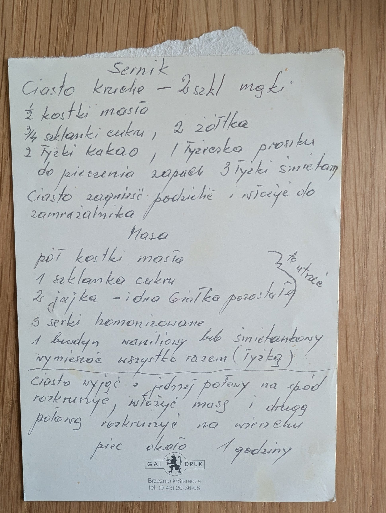

Sernik na kruchym cieście

Składniki
- Ciasto kruche: 2 szkl. mąki
- ½ kostki masła
- ¾ szklanki cukru
- 2 żółtka
- 2 łyżki kakao
- 1 łyżeczka proszku do pieczenia
- zapach
- 3 łyżki śmietany
- Masa: pół kostki masła
- 1 szklanka cukru
- 2 jajka i 2 pozostałe białka
- 3 serki homogenizowane
- 1 budyń waniliowy lub śmietankowy
Przygotowanie
- Ciasto zagnieść, podzielić, włożyć do zamrażalnika.
- Masło, cukier, jajka i pozostałe białka utrzeć.
- Dodać serki i budyń, wymieszać wszystko razem łyżką.
- Ciasto wyjąć, jedną połowę rozkruszyć na spód.
- Włożyć masę, drugą połowę rozkruszyć na wierzchu.
- Piec około 1 godziny.
Oryginalny zapis
Sernik
Ciasto kruche – 2 szkl mąki
½ kostki masła
¾ szklanki cukru, 2 żółtka
2 łyżki kakao, 1 łyżeczka proszku
do pieczenia zapach 3 łyżki śmietany
Ciasto zagnieść podzielić, włożyć do
zamrażalnika
Masa
pół kostki masła ⎫
1 szklanka cukru ⎬ to utrzeć
2 jajka – i dwa białka pozostałe ⎭
3 serki homogenizowane
1 budyń waniliowy lub śmietankowy
wymieszać wszystko razem (łyżką)
————————————————————
Ciasto wyjąć z jednej połowy na spód
rozkruszyć, włożyć masę i drugą
połowę rozkruszyć na wierzchu
piec około 1 godziny